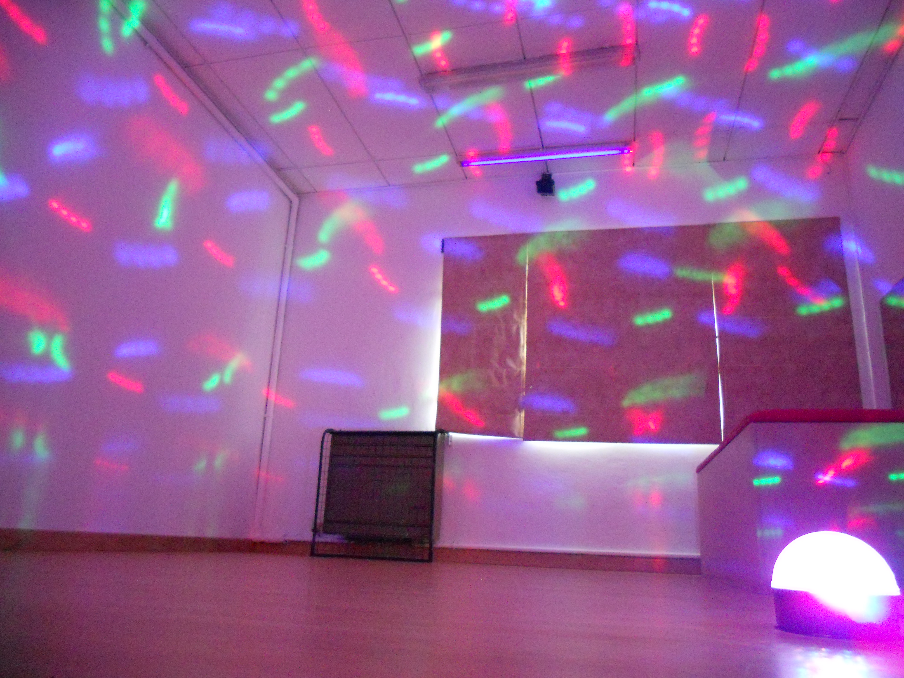
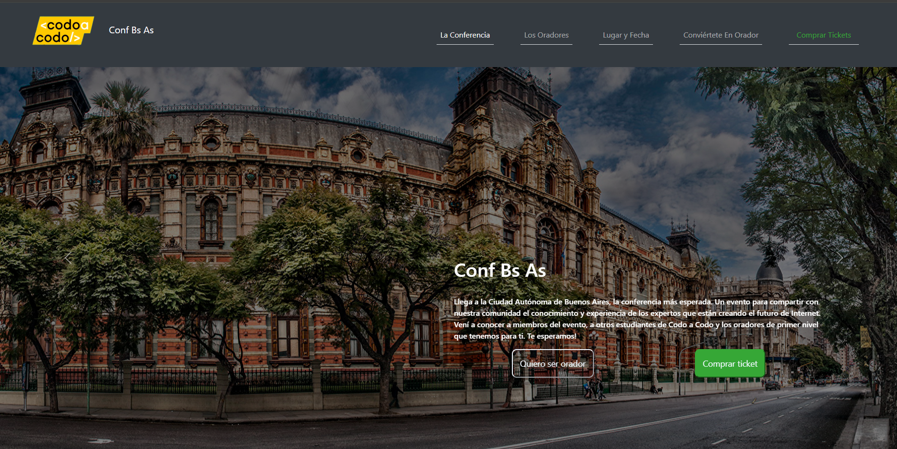

Sobre Mí
Nombre y Apellido: María Eugenia Bava
Fecha de Nacimiento: 23 de agosto de 1971
Domicilio: Vivo en San Carlos de Bariloche, Río Negro, Argentina
Estudios: Bioingeniera por la Uiversidad de Entre Ríos - Prof. de Educación Especial por ISPEE
Proyectos
Sala Sensorial
Para unificar mis dos carreras como Tesis de Ingeniería realicé una Sala Sensorial para la Escuela Especial N°6 en Bariloche
Clon de Pagina Web
El 2022 realicé un curso de Full stac en Codo a Codo y realizamos el Clon de una página Web que nos ofreció la posibilidad de aprender JSy algo de JAVA
Mis Habilidades
- Tecnologías: inicio de Js, C#, kotlin
- Idiomas: español e inglés
- Desafíos: profundizar estos lenguajes de programación y adquirir nuevas herramientas de software
- Habilidades Blandas: empática, tesonera, curiosa
- Hobbies: leer, cantar y escuchar música
Mis Películas Favoritas
El Descanso
El descanso (2006) es una comedia romántica sobre dos mujeres que intercambian casas en Navidad para olvidar sus problemas amorosos. Amanda Woods (Cameron Diaz) es una editora de Los Ángeles que acaba de romper con su novio. Iris Simpkins (Kate Winslet) es una periodista de Londres que sufre por un hombre comprometido con otra mujer. A través de una página de intercambio de casas, las dos mujeres deciden intercambiar residencias y pertenencias durante dos semanas.

La Gran Estafa
La gran estafa (2001) es una película sobre un grupo de criminales que planean robar tres casinos de Las Vegas al mismo tiempo Danny Ocean (George Clooney) y su amigo Rusty Ryan (Brad Pitt) se unen para planear el robo de los casinos Bellagio, Mirage y MGM Grand. Para ello, reclutan a una banda de diez expertos en diferentes tareas. El plan se complica cuando descubren que el dueño de los casinos, Terry Benedict, está saliendo con Tess, la ex-mujer de Danny.

E.T.
E.T., el extraterrestre es una película de ciencia ficción de 1982 dirigida por Steven Spielberg. Cuenta la historia de un niño que se hace amigo de un extraterrestre abandonado en la Tierra. Un grupo de extraterrestres en misión de paz se queda varado en la Tierra cuando su nave se marcha sin uno de ellos. El niño Elliott encuentra al extraterrestre, lo esconde en su casa y le pone el nombre de E.T. El y sus hermanos intentan que E.T. regrese a su planeta antes de que lo encuentren la policía y los científicos.